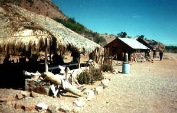
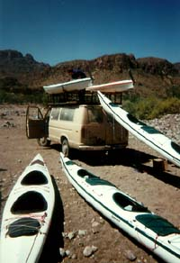

The morning was busy, tearing down the camp while sucking on coffee and pancakes. Without the food and water, our kayaks could hold all of our gear with plenty of room to spare, so packing was easy this time. I felt a bit sad to be leaving, I had decided that a couple of months very well could have suited me just fine. I had grown a veneer of outdoor living around me, and forgot the complicated comforts of real life. As I put the last dry bag into the hold of our boat, I was already planning our next adventure by kayak.
We paddled an easy few miles through midmorning. Our boat was light and responsive, riding high in the water, no longer under load. Leslie and I worked well together and stayed well ahead of everyone all day.
Soon, we began to see slight clues of life. A couple pongas on a beach, a camper under a tree. Martin called to us to turn in, and shortly we were pulling kayaks up the beach, making piles of gear, and then finally walking in to the rancho for breakfast.

We ate under a grass roof, served big bowls of barbecued goat with tortillas. Children scurried around with handfuls of hand-made jewelry, trying hard to bargain for an extra dollar. Chickens pecked at an old pickup near our feast.
After finishing up, we made our way back to the beach where we were met by the vans (and different drivers, thankfully). We helped load the boats on the roof, then filled the vans with gear and bodies and head back to Loreto.

The road was a thin strip of dirt climbing over the mountains. We passed washed out sections that took careful skill to navigate, and an occasional cross with dried flowers on the roadside. For 90 minutes we bumped along through the desert, unable to nap as the van threw us back and forth. There was nothing at all but brush and rocks, but every couple of dozen miles, we'd come across a lone rancho -- a couple of squat buildings, a truck, and usually a solar panel or two. So alone in the empty desert.
We eventually pulled on to the main highway, and soon were turning past the airport into Loreto and to our hotel. We made plans for a group dinner, and then bolted for our rooms and a long hot shower. Moments later, the spell was completely broken as I sat drying off before the TV in an air conditioned room.
That night, we feasted on platters of local food and icy pitchers of margaritas. After, when the rest of the group had retired to the hotel, we strolled through the dark town with Martin and Tom, laughing about our adventures and telling stories about the trip. We stumbled back to the hotel late, and slept deeply in soft beds, our bags stacked by the door for tomorrow's taxi ride to the airport and the long flight back to San Francisco.